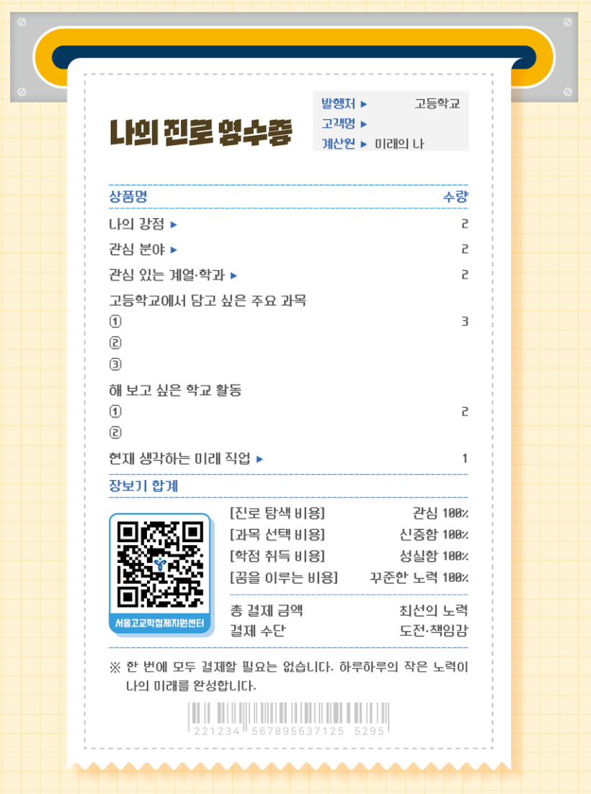
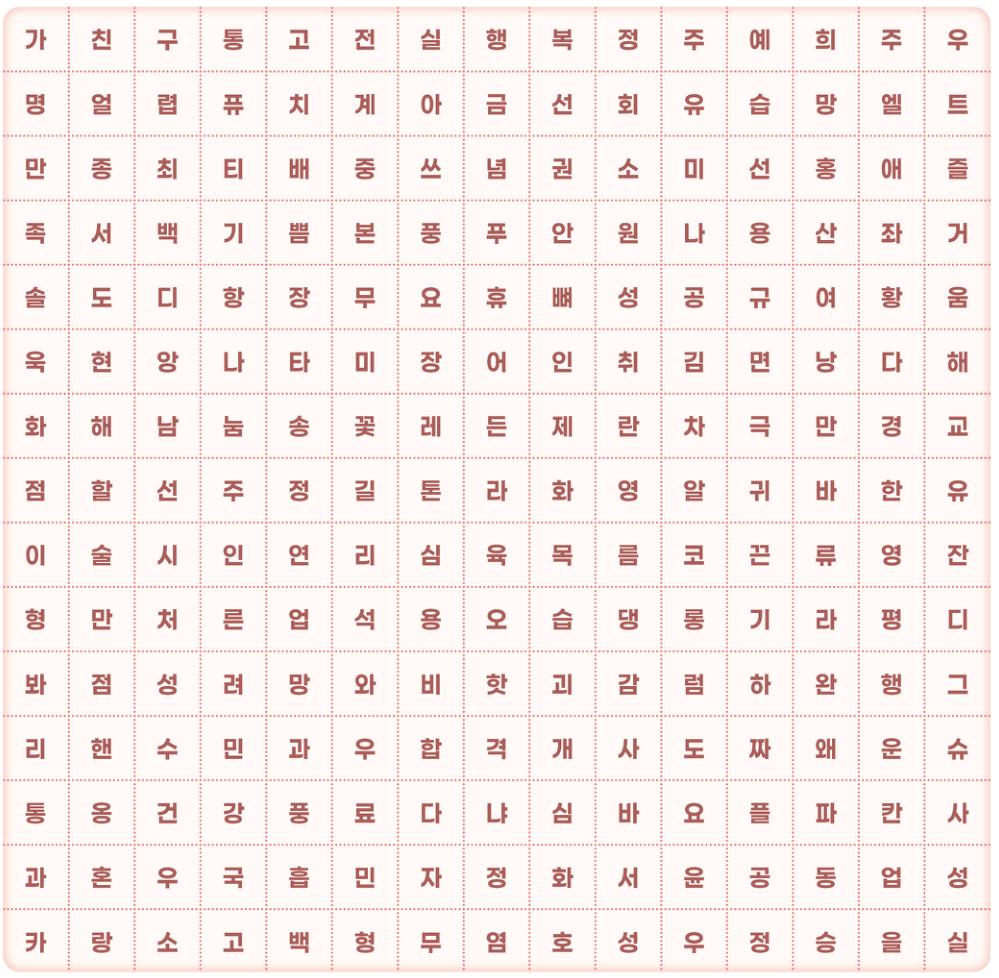

MY SCHOOL, MY CHOICE · 워크북 16–17쪽
배우고 싶은 과목으로
나만의 시간표를 만들어요.
과목을 체크하면 시간표가 차곡차곡 채워져요. 나의 관심과 진로를 떠올려 보세요.
같은 색·기호의 칸은 같은 과목이에요. 색은 과목의 종류를 뜻하지 않아요.
학기마다 8과목(주 3~4시간)을 선택해요. 1·2학기는 서로 다른 과목으로 구성해요.
학기마다 8과목(주 3~4시간)을 선택해요. 1·2학기는 서로 다른 과목으로 구성해요.
UNLOCK YOUR KNOWLEDGE · 워크북 22쪽
고교학점제 마무리 Quiz
오른쪽 단어를 빈칸으로 옮겨 보세요. 단어를 누르고 빈칸을 눌러도 돼요.
🔒
최종 비밀번호
빈칸에 옮긴 단어의 기호를 순서대로 입력해요. 초성·중성·종성을 한 칸에 하나씩!
A RECEIPT FOR MY FUTURE · 워크북 23쪽
오늘의 선택이, 내일의 나로.
영수증의 빈칸을 모두 채우고 나만의 진로 영수증을 저장해요.

THREE WORDS FOR NEXT YEAR · 선택 활동
내년에 이뤄질, 나의 세 단어.
가장 먼저 보이는 세 단어가 내년에 이루어진대요!
가로·세로로 찾아보세요. 대각선은 제외해요.

발견한 단어는 오른쪽에 적어 주세요.
내가 찾은 단어는?